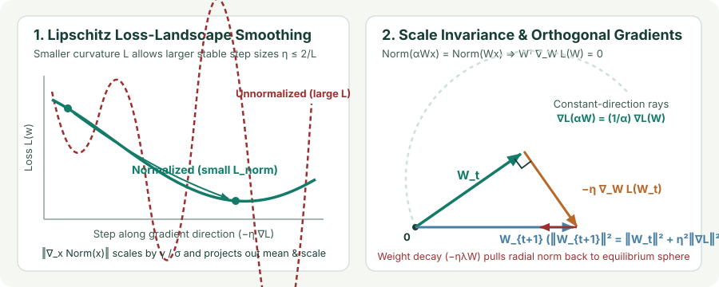

Why Normalization Works: Loss Smoothing, Scale Invariance, and Effective Learning Rates
Compare Internal Covariate Shift with Lipschitz loss-landscape smoothing, prove that scale-invariant layers force gradients orthogonal to weights ($W^\top\nabla_W\mathcal L=0$), and derive why weight decay controls the effective learning rate $\eta_{\text{eff}}\propto\eta/\|W\|_2^2$.
Every modern deep architecture—from ResNets and ConvNeXts to LLaMA, Gemma, and Diffusion Transformers—places normalization layers throughout its computational graph. Without them, deep networks require delicate initialization and tiny learning rates; with them, networks train reliably at $5\times\text{–}10\times$ larger step sizes. Why does dividing by a standard deviation change optimization geometry so dramatically?
1. Internal Covariate Shift vs. Lipschitz loss smoothing
When Ioffe and Szegedy (2015) introduced Batch Normalization, they attributed its success to reducing Internal Covariate Shift (ICS)—the change in the distribution of layer inputs $z_l = W_l h_{l-1}$ as earlier layers $W_1,\dots,W_{l-1}$ update. However, Santurkar et al. (2018) tested this hypothesis directly by injecting non-stationary, noisy random shifts and scales after BatchNorm at every step. Even when the first two moments shifted wildly from step to step, BatchNorm networks still converged rapidly, whereas unnormalized networks with stable moments lagged behind.
What normalization actually changes is the Lipschitz smoothness ($L$-smoothness) of the loss landscape. A differentiable function $\mathcal L(w)$ is $L$-smooth if its gradient satisfies $\|\nabla\mathcal L(w')-\nabla\mathcal L(w)\|_2\le L\|w'-w\|_2$, which implies the quadratic upper bound along a gradient step $w_{t+1}=w_t-\eta\nabla\mathcal L(w_t)$:
Decreasing the local curvature $L$ allows gradient descent to take much larger stable steps $\eta < 2/L$ without overshooting. For a normalized activation $y = \gamma\hat z + \beta$ where $\hat z = (z-\mu)/\sigma$, Santurkar et al. showed that the pre-normalization gradient $\nabla_z\mathcal L$ satisfies two variance-shrinking bounds relative to the post-normalization gradient $g = \nabla_y\mathcal L$:
Both the gradient norm and the directional Hessian curvature are scaled down by $\gamma^2/\sigma^2$ and have their projections onto the constant vector $\mathbf{1}$ (mean shift) and normalized signal $\hat z$ (scale stretch) subtracted out.

2. Scale invariance and exact gradient orthogonality
Suppose a linear layer $z = Wx$ (with no bias) feeds directly into a normalization layer (BatchNorm, LayerNorm, RMSNorm, GroupNorm, or InstanceNorm) with $\varepsilon\to 0$. If we rescale the weight matrix by any positive scalar $\alpha > 0$, the mean and standard deviation of $\alpha z$ both scale by $\alpha$:
Therefore, the network loss is 0-homogeneous (scale-invariant) in $W$: for all $\alpha > 0$, $\mathcal L(\alpha W) = \mathcal L(W)$. Differentiating this single identity unlocks three fundamental geometric properties:
- 1. Gradient orthogonality ($W \perp \nabla_W\mathcal L(W)$): Differentiate $\mathcal L(\alpha W) = \mathcal L(W)$ with respect to $\alpha$ using the multivariable chain rule and evaluate at $\alpha = 1$ (Euler’s homogeneous function theorem):
$$\left.\frac{d}{d\alpha}\mathcal L(\alpha W)\right|_{\alpha=1} = \langle \nabla_W\mathcal L(W), W\rangle = \operatorname{tr}\!\left(W^\top\nabla_W\mathcal L(W)\right) = 0.$$The gradient $\nabla_W\mathcal L(W)$ has zero component along the radial direction $W$; it lies purely in the tangent hyperplane to the sphere of radius $\|W\|_F$.
- 2. Inverse gradient scaling ($-1$-homogeneity): Differentiate $\mathcal L(\alpha W) = \mathcal L(W)$ with respect to $W$:
$$\alpha\,\nabla_W\mathcal L(\alpha W) = \nabla_W\mathcal L(W) \implies \nabla_W\mathcal L(\alpha W) = \frac{1}{\alpha}\nabla_W\mathcal L(W).$$Doubling the norm of $W$ leaves the forward output unchanged and halves the backward gradient!
- 3. Inverse-square Hessian scaling ($-2$-homogeneity): Differentiating once more with respect to $W$ gives
$$\nabla_W^2\mathcal L(\alpha W) = \frac{1}{\alpha^2}\nabla_W^2\mathcal L(W).$$
3. Pythagorean norm growth, effective learning rate, and weight decay
What happens during gradient descent $W_{t+1} = W_t - \eta\nabla_W\mathcal L(W_t)$ when $W_t \perp \nabla_W\mathcal L(W_t)$? By the Pythagorean theorem, the squared Frobenius norm strictly increases at every nonzero gradient step:
Because only the unit direction $\hat W_t = W_t / \|W_t\|_F$ affects the forward predictions, how much does one step actually move the direction $\hat W_t$? Writing the gradient at $W_t = \|W_t\|_F \hat W_t$ using $-1$-homogeneity $\nabla_W\mathcal L(W_t) = \frac{1}{\|W_t\|_F}\nabla_W\mathcal L(\hat W_t)$, the first-order angular change on the unit sphere is
This gives the effective learning rate of a normalized layer (van Laarhoven, 2017; Hoffer et al., 2018; Arora et al., 2019):
- Without weight decay ($\lambda = 0$): Pythagorean norm growth drives $\|W_t\|_F^2$ upward monotonically, which automatically anneals $\eta_{\text{eff}}(t) = \eta/\|W_t\|_F^2$ downward over training (Arora et al., 2019).
- With weight decay ($\lambda > 0$): The update $W_{t+1} = (1-\eta\lambda)W_t - \eta\nabla_W\mathcal L(W_t)$ has squared norm
$$\|W_{t+1}\|_F^2 = (1-\eta\lambda)^2\|W_t\|_F^2 + \eta^2\|\nabla_W\mathcal L(W_t)\|_F^2 \approx (1-2\eta\lambda)\|W_t\|_F^2 + \frac{\eta^2}{\|W_t\|_F^2}\|\nabla_W\mathcal L(\hat W_t)\|_F^2.$$Setting $\|W_{t+1}\|_F^2 = \|W_t\|_F^2$ reveals that weight decay for scale-invariant layers does not constrain model capacity—instead, it pins $\|W_t\|_F$ to an equilibrium sphere where radial shrinkage balances tangential gradient expansion:$$\|W^*\|_F^4 \approx \frac{\eta}{2\lambda}\|\nabla_W\mathcal L(\hat W^*)\|_F^2 \implies \eta_{\text{eff}}^* = \frac{\eta}{\|W^*\|_F^2} \propto \sqrt{\frac{\lambda\eta}{\|\nabla_W\mathcal L(\hat W^*)\|_F^2}}.$$
4. Verify gradient orthogonality and $-1$-homogeneity in PyTorch
You can verify these exact identities numerically in a few lines of PyTorch by setting `eps=0.0` on a normalized linear layer:
import torch
import torch.nn as nn
torch.manual_seed(0)
x = torch.randn(16, 64)
target = torch.randn(16, 32)
def probe_scale(alpha: float):
w = nn.Parameter(alpha * torch.randn(32, 64, generator=torch.Generator().manual_seed(42)))
z = x @ w.T
# Zero-mean, unit-variance per token (LayerNorm with eps=0)
z_hat = (z - z.mean(dim=-1, keepdim=True)) / z.std(dim=-1, unbiased=False, keepdim=True)
loss = ((z_hat - target) ** 2).mean()
loss.backward()
dot = (w.data * w.grad).sum().item()
grad_norm = w.grad.norm().item()
return loss.item(), dot, grad_norm
loss_1, dot_1, gnorm_1 = probe_scale(alpha=1.0)
loss_3, dot_3, gnorm_3 = probe_scale(alpha=3.0)
print(f"alpha=1: loss={loss_1:.6f}, ={dot_1:.2e}, ||grad||={gnorm_1:.6f}")
print(f"alpha=3: loss={loss_3:.6f}, ={dot_3:.2e}, ||grad||={gnorm_3:.6f} (1/3 of alpha=1)") 5. Questions worth answering
Because the mean over the normalization group shifts by $b$: $\mu(Wx+b) = \mu(Wx) + b$. When the normalization layer subtracts the mean, $(Wx_i + b) - (\mu(Wx) + b) = Wx_i - \mu(Wx)$, cancelling $b$ identically on every forward pass and giving $\partial\mathcal L/\partial b = 0$. Normalization’s own shift parameter $\beta$ replaces that bias after standardization.
Because scale invariance makes the network output depend only on the direction $\hat W = W/\|W\|_F$. Larger weight decay $\lambda$ shrinks the equilibrium norm $\|W\|_F$, which increases the angular step size $\eta_{\text{eff}} = \eta/\|W\|_F^2$ on the unit sphere.
Yes! Even without subtracting the mean $\mu$, the root-mean-square denominator satisfies $\operatorname{RMS}(\alpha z) = \alpha\operatorname{RMS}(z)$ for $\alpha > 0$ (as $\varepsilon\to 0$), so $\alpha Wx / \operatorname{RMS}(\alpha Wx) = Wx / \operatorname{RMS}(Wx)$. Thus Euler’s theorem still enforces $\langle W, \nabla_W\mathcal L(W)\rangle = 0$.
Sources
Ioffe and Szegedy, Batch Normalization: Accelerating Deep Network Training by Reducing Internal Covariate Shift (2015); Santurkar et al., How Does Batch Normalization Help Optimization? (NeurIPS 2018); van Laarhoven, L2 Regularization versus Batch and Weight Normalization (2017); Arora, Li, and Lyu, Theoretical Analysis of Auto Rate-Tuning by Batch Normalization (ICLR 2019).